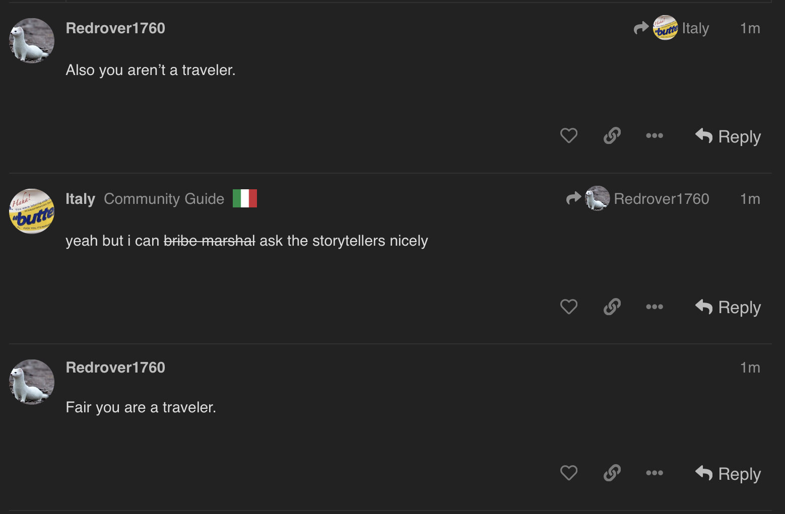
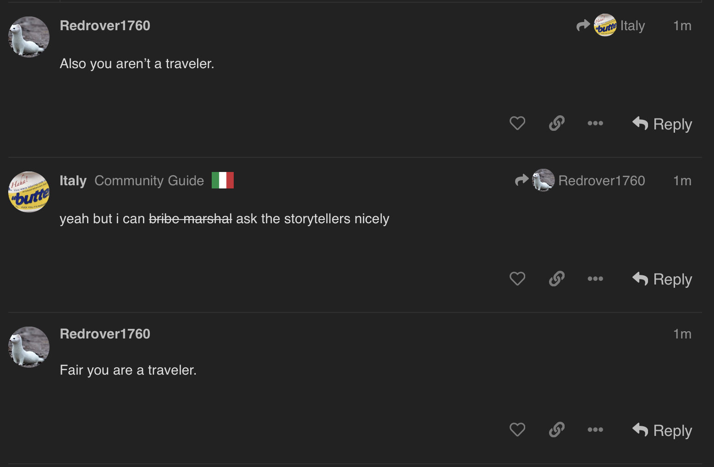

wait but italy is a traveler
But you aren’t representative of the travelers.
 

What has he done besides mechtalk?
Italy is trying to forcefully induct katze into the traveler cult.
one of us
I would need to analyze those posts cause I didn’t really notice him.
I didn’t deepread them either but from scrolling over it doesn’t look very fruitful.
the icibalus slot is very very important so we should be worried if it’s not evidently town
would rather not since i havent gotten to talk to priestess yet
ive probably heard enough from redrover
If icibalus is evil then I’d consider looking into his mechtalk
mechanically ici can’t be scum because of how gamebreaking it would be
but what if he is
Also I don’t really want to switch katze and kyo because while the traveler cult is fun and all, I am trying to take this semi seriously
then he could instantly end final 3 in an evil win
Although if he is evil then reluctancy to kill a player could mean we found the demon
all im saying is if we’re not sure if icibalus is town that’s a bad thing
even if, mechanically, you aren’t wrong in that that would be a hella strong evil role
storyteller chooses traveler alignment, it’s not random
N hasn’t always made… the most balanced roles
I think his mechtalk can be alignment-indicative.
I’m not in the mood for a deepread right now but their mech talk hasn’t done match to advance the gamestate. They have provided minimal reads if i recall correctly.
The Syndicate comes to mind